Ama, Shimane: things to do, food and stays
Ama · Shimane
Ama
Highlighted on the Shimane map.
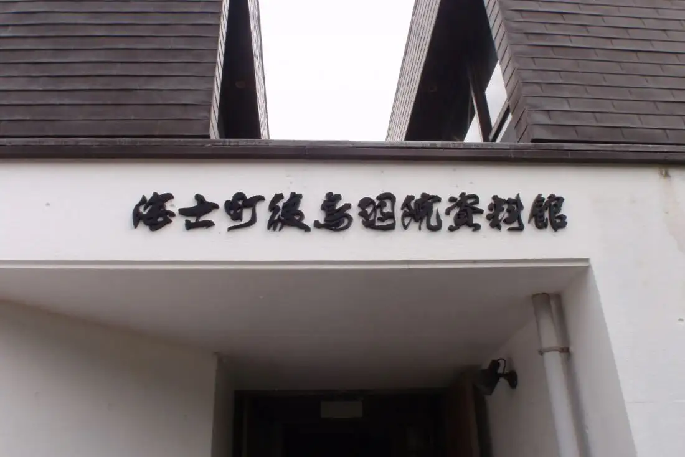
Stay
Ento
Ento
おとまり処 なかむら
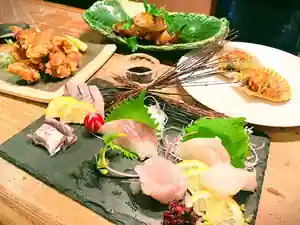
Otomari Tokoro Nakamura
UMINOIE YUTAKA
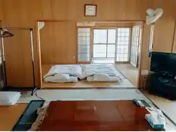
UMINOIE YUTAKA
Log-inn 海士町一棟貸しログハウス
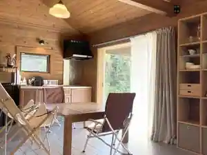
Log-inn Kaishi Machi Hitomune Kashi Rogu House
Inn in Kaishi, Ama with a quiet countryside setting.
かたえ荘
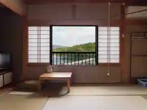
Katae So
Ｂ＆Ｂあとど
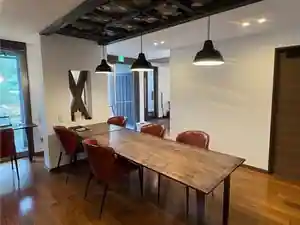
B&B Atodo
Inn in Fukui, Ama with a renovated traditional house.
海士グランピング ＴＡＤＡＹＯＩ
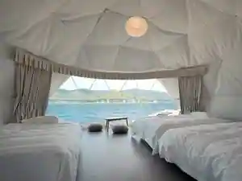
Kaishi Guranpingu TADAYOI
Dining
島生まれ島育ち 隠岐牛店
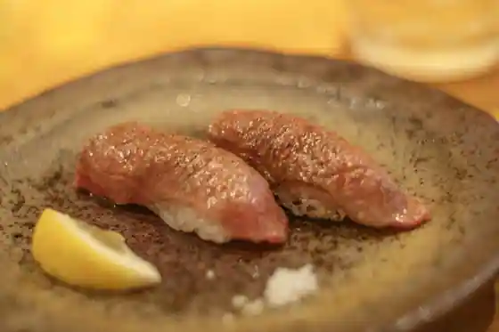
Shima Umare Shima Sodachi Oki Ushi
レストラン 船渡来流亭
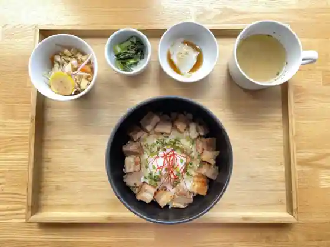
Restaurant Funato Rai Ryu Tei
きくらげちゃかぽん Motekoiyo
Kikuragechakapon Motekoiyo
Ento Dining
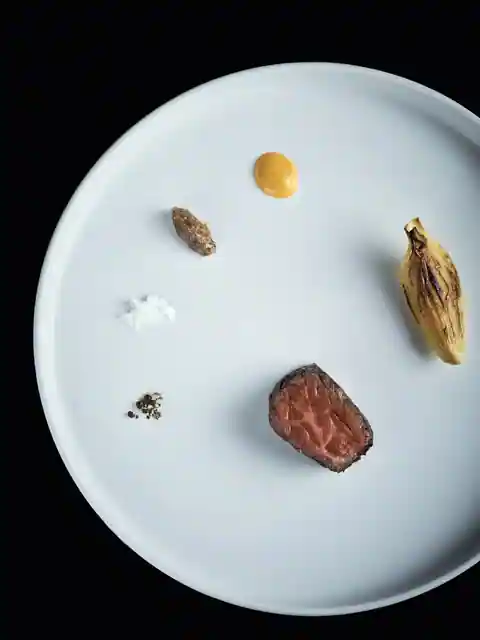
Ento Dining
八千代
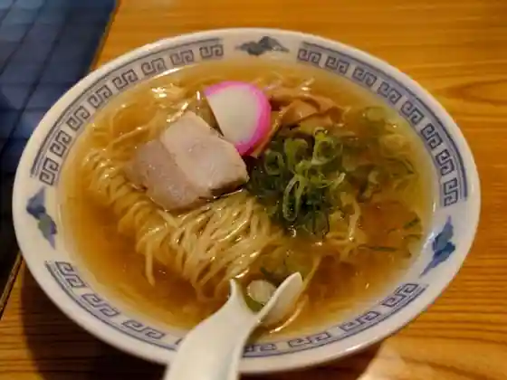
Yachiyo
食事処 華蘭
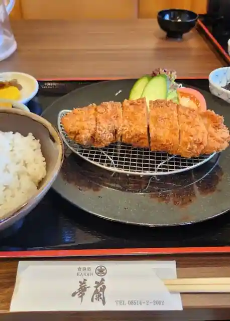
Shokuji Tokoro Hana Ran
島じゃ常識店
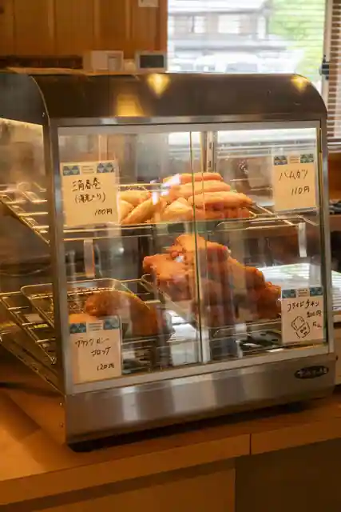
Shima Ja Joshiki
花屋のポンタ
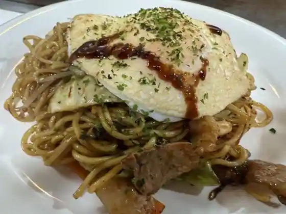
Hanaya No Ponta
亀乃
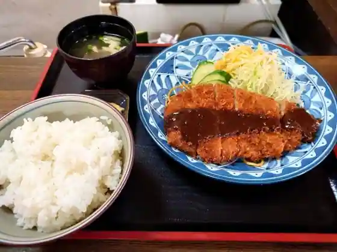
Kame No
紺屋
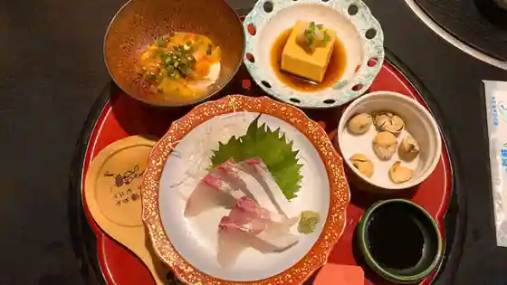
Koya
喫茶 MG
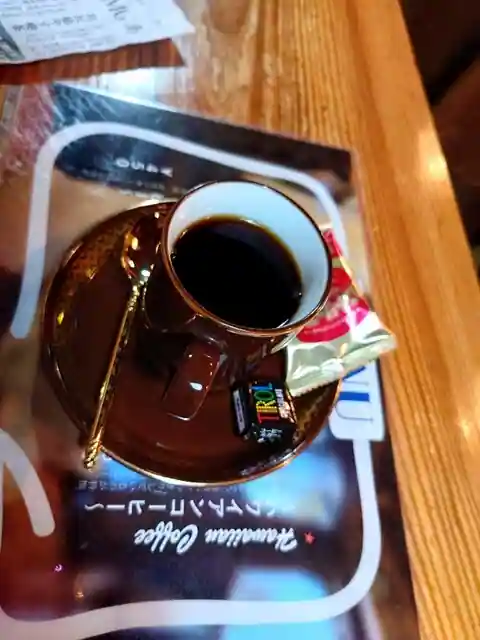
Kissa MG
Italian cafe Radice
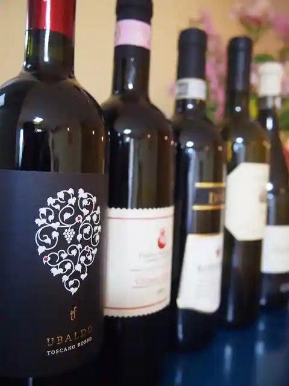
Italian cafe Radice
離島キッチン 海士
Ri Shima Kitchen Kaishi
鮨 陸
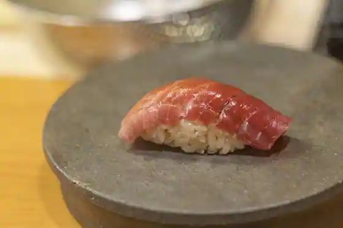
Sushi Riku
海鮮処 味蔵
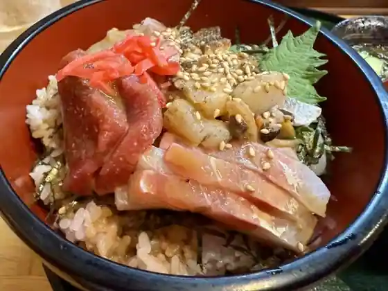
Kaisen Tokoro Aji Kura
つなかけ
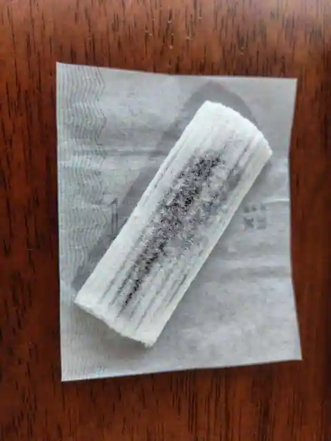
Tsunakake
アヅマ堂
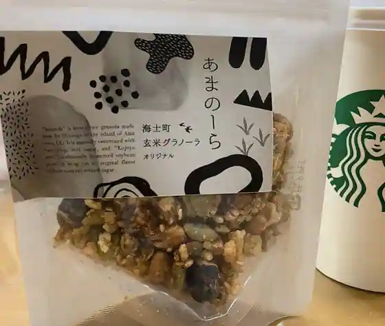
Azuma Do
茶蘭花
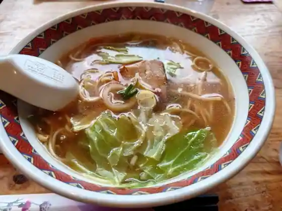
Cha Ranka
あざ美荘
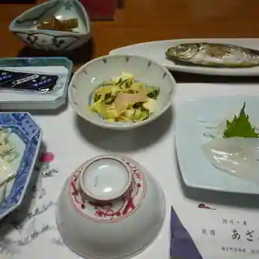
Aza Bi So
Sights
Oki Shrine
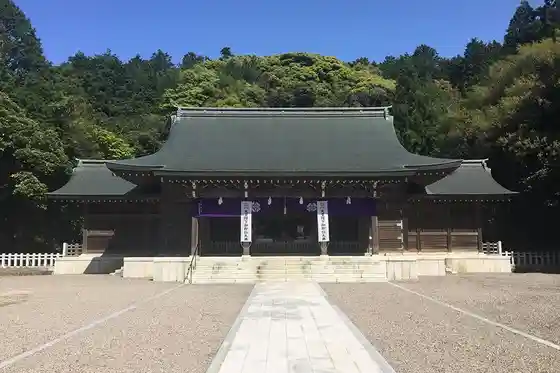
Kaichu Tembo Fune (Amambo)
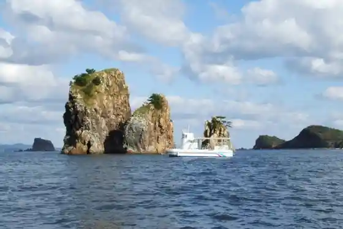
(Issha) Ama Tourism Association
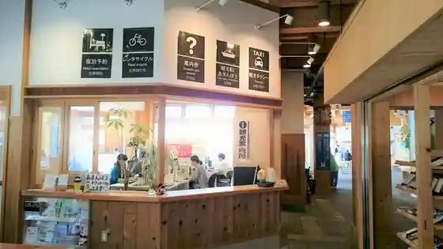
Kinnyamonya Center
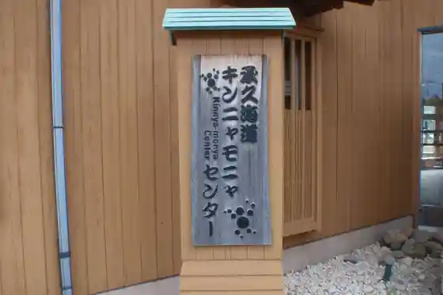
Entô
Ama Gotoba In Museum
Aza Bi So
Shima Umare Shima Sodachi Oki Ushi Mise
Fukugi Cha
TADAYOI Ama Guranpingu
Yoshida Ryokan
Shima Ja Joshiki Shoten
Oki Shrine Cherry Blossoms
Minshuku Katae So
Resutoran Funato Rai Ryu Tei
Yakumo Plaza
Ki Michigasaki Lighthouse
Izumi So
Ozaki
Ama Town Hall